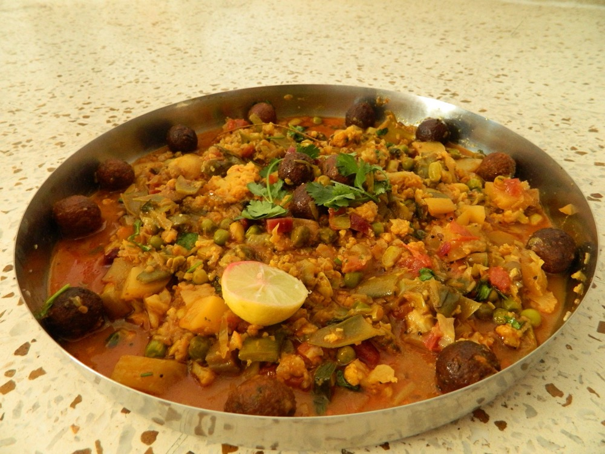

Undhiyu
Surat's winter casserole of root vegetables and methi dumplings, cooked upside down

Contains: peanuts, sesame
Ingredients
Quantities for 6.
- 200g, cubed Yam
- 200g, cubed Sweet Potato
- 2, thick slices Raw Banana
- 3 small, halved Potato
- 6 small, slit Eggplant
- 150g Cluster Beans
- 1 cup, fresh tuvar if available Dried Peas
- 1 cup Besanfor the muthiya dumplings
- 2 cups, chopped Methi Leaves
- 1 cup, grated Coconut
- 1 cup Coriander Leaves
- 6 Green Chilli
- 2 tbsp Ginger
- 2 tbsp Sesame
- 3 tbsp, crushed Peanutoptional
- 1 tsp Ajwainoptional
- a pinch Asafoetida
- 1 tbsp Jaggery
- 1 Lemon
- 6 tbsp Groundnut Oil
- to taste Salt
Cookware
stovetop, kadhai
Checked against the ingredient list for ten allergens: milk, egg, fish, crustaceans, tree nuts, peanuts, sesame, mustard, soy and gluten. Brands vary, so read the label on anything new to you.
Before you start
- Undhiyu takes its name from undhu, upside down: it was buried in an inverted earthen pot and cooked in a pit. The domestic version layers everything in a heavy pot and never stirs it.
- The green masala of coconut, coriander, chilli and ginger goes both inside the slit vegetables and between the layers. Make it first.
Method
- Blend the coconut, coriander, green chilli, ginger, sesame, peanut, jaggery, lemon and salt to a coarse green masala.
- Make muthiya: knead the besan with chopped methi, a spoon of the masala, ajwain and a little water into a stiff dough; shape small dumplings and shallow fry until golden. Set aside.
- Stuff the slit eggplants and any halved potatoes with the green masala.
- In a heavy pot, heat the oil with asafoetida, then layer the vegetables hardest-first: yam and sweet potato at the bottom, then banana and potato, then beans and peas, stuffed eggplant on top.Layer by cooking time and do not stir. That is the whole method.
- Spoon over the remaining masala and a splash of water, cover tightly and cook on low heat 35-40 minutes.
- Add the muthiya for the last 10 minutes so they soften without dissolving. Fold once, very gently, at the end.
Storage
Keeps 2 days refrigerated. Reheat gently and briefly; the vegetables are already soft and will collapse. Not suitable for freezing.
Nutrition Good estimate
High protein: 33 g a serving, 15% of the calories
| Per serving486 g | Per 100 g | |
|---|---|---|
| Calories | 880 kcal | 182 kcal |
| Protein | 32.8 g | 7 g |
| Carbohydrate | 136.8 g | 28 g |
| of which sugars | 27.7 g | 6 g |
| Fibre | 34.3 g | 7 g |
| Fat | 30.0 g | 6 g |
| of which saturated | 8.1 g | 2 g |
| of which unsaturated | 16.4 g | 3 g |
Nearest database match used for jaggery, methi leaves. Estimated from raw ingredients using USDA FoodData Central.
More like this: Vegan Indian recipes · Vegetarian Indian recipes · Gluten-free Indian recipes · Dairy-free Indian recipes · Gujarati recipes
Times, yields, allergens and nutrition are guidance. Use your own judgement on doneness and on storing. More in About.